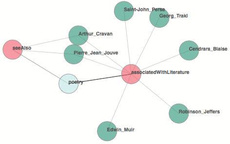

Example Searches
-
Sunburst Search
Search= Subject:Alan Turing
-
Force Directed Graph
Search= Object:poetry; then applied filters Gender:Man, Sexuality:Heterosexual, and BirthYear:1887

-
Sankey
Search= Subject:Clement Meadmore
-
Degrees of Separation
Search= Degrees of Separation between: Henri Matisse and Pablo Picasso